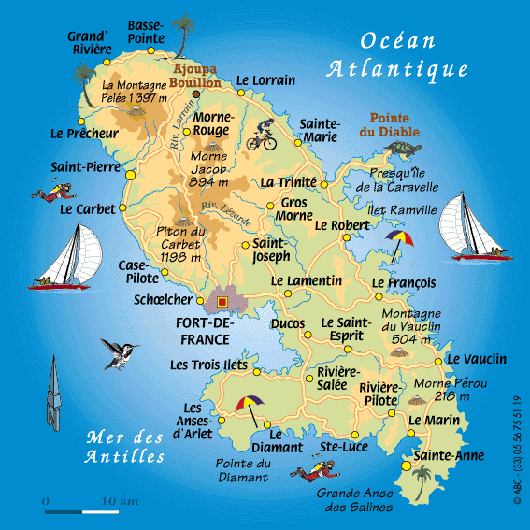
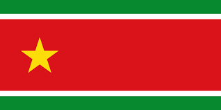
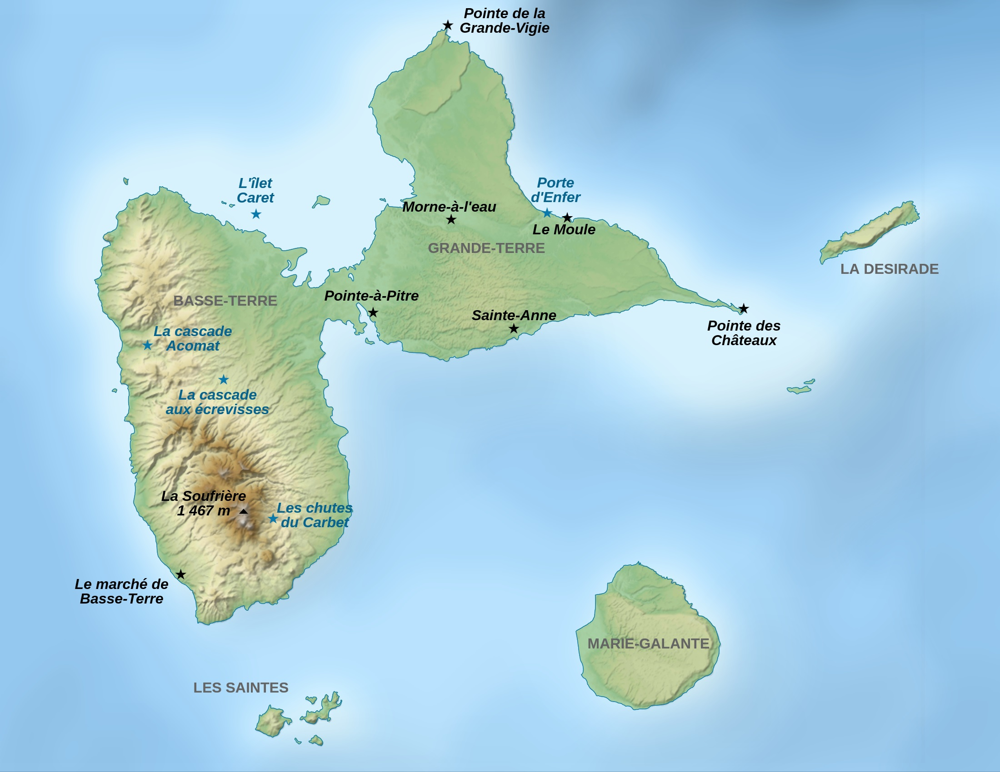

Martinique
Martinique 1ère France-Antilles
La Martinique, surnommée l'île aux fleurs, se trouve dans les Petites Antilles. Avec une population de 347 686 habitants selon le recensement de 2023, cette île, département français, attire de nombreux touristes, tout comme sa voisine, la Guadeloupe.Elle est composée de 34 communes organisées en 3 communautés d'aglomération. Sa capitale est Fort-deFrance et est la ville la plus peuplée de toute la Martinique.
Elle se distingue par sa culture, notamment le Carnaval, le bèlè, une danse traditionnelle, ainsi que par ses paysages et sa gastronomie, tels que le colombo de poulet et le chatrou. La Martinique est également connue pour ses plages de sable blanc et ses eaux cristallines. Elle est une destination prisée pour les amateurs de plongée sous-marine, de voile et de surf.

Guadeloupe
Guadeloupe 1ère France-Antilles
La Guadeloupe, également située dans les Petites Antilles, compte 375 845 habitants en 2023. Elle est composée de deux grandes îles : Basse-Terre à l'ouest et Grande-Terre à l'est. À proximité se trouvent d'autres îles, telles que Marie-Galante, La Désirade et les Saintes.
La Guadeloupe se distingue par sa culture, notamment le Gwoka, une danse traditionnelle, et des spécialités culinaires comme la crêpe poisson. Bien qu'en compétition avec la Martinique pour ses plages et ses sites emblématiques, la Guadeloupe possède des attraits uniques, comme la Soufrière et ses nombreuses rivières. Sa capitale économique est Pointe-à-Pitre.